컴퓨터활용능력-1급 (2012-06-16 기출문제)
1과목: 컴퓨터 일반
1. 다음 중 한글 Windows XP의 특징에 관한 설명으로 옳지 않은 것은?
- 같은 컴퓨터를 사용하는 여러 사용자가 바탕 화면, 시작 메뉴, 즐겨찾기, 메일 계정 등의 Windows 설정을 서로 다르게 지정할 수 있다.
- 인터넷 연결 공유와 원격 지원 뿐만 아니라 [네트워크 설정 마법사]를 이용하여 여러 컴퓨터를 소규모 네트워크로 간단히 구성할 수 있는 기능을 지원한다.
- 사용자의 컴퓨터를 무단으로 액세스하려는 사람이나 바이러스 및 웜을 포함하는 프로그램을 차단하기 위한 Windows 방화벽 기능을 지원한다.
- 모든 데이터를 64비트 단위로 처리하므로 사용자는 더 많은 데이터를 빠르게 처리할 수 있고 효율적인 시스템을 구축할 수 있다.
(정답률: 65%)

2. 다음 중 한글 Windows XP에서 마우스의 끌어놓기(Drag&Drop) 기능을 이용하여 할 수 있는 작업으로 옳지 않은 것은?
- 파일이나 폴더를 다른 폴더로 이동하거나 복사할 수 있다.
- 폴더 창의 크기를 조절하거나 이동을 할 수 있다.
- 선택된 파일이나 폴더의 이름 바꾸기를 할 수 있다.
- 파일이나 폴더의 바로 가기 아이콘을 만들 때 사용할 수 있다.
(정답률: 75%)
3. 다음 중 컴퓨터에서 중앙처리장치와 입출력장치 사이의 속도 차이로 인한 문제점을 해결해 주는 것은?
- 범용레지스터
- 인터럽트
- 콘솔
- 채널
(정답률: 82%)
4. 다음 중 한글 Windows XP에서 프린터를 공유하기 위한 작업 선택의 순서로 옳은 것은?
- [제어판]-[프린터 및 하드웨어]-[프린터 추가]-[로컬 프린터 선택]
- [제어판]-[프린터 및 팩스]-[프린터 선택]-[공유]
- [제어판]-[프린터 및 하드웨어]-[프린터 추가]-[포트 선택]
- [제어판]-[공유]-[프린터를 선택]-[기본 프린터 설정]
(정답률: 69%)
5. 다음 중 소프트웨어 개발 과정에서 베타 테스트에 관한 설명으로 옳은 것은?
- 프로그램의 개발 과정에서 컴퓨터 바이러스 감염을 알아 내기 위한 검사이다.
- 컴퓨터 하드웨어 및 소프트웨어 성능을 비교 평가하는 검사이다.
- 프로그램 개발 시 내부에서 미리 평가하고 버그를 찾아 수정하기 위해 시험해 보는 검사이다.
- 정식으로 프로그램을 공개하기 전에 한정된 집단 또는 일반인에게 공개하여 기능을 시험하는 검사이다.
(정답률: 81%)
6. 다음 중 정보화와 인터넷 시대의 중요한 요소인 멀티미디어의 특징에 관한 설명으로 옳지 않은 것은?
- 데이터가 다양한 방향으로 처리되는 것이 아니라 일정한 방향으로 순차적으로 처리된다.
- 정보 제공자와 사용자 간의 의견을 통한 상호 작용에 의해 데이터가 전달된다.
- 다양한 아날로그 데이터를 디지털 데이터로 변환하여 통합 처리한다.
- 텍스트, 그래픽, 사운드, 동영상, 애니메이션 등의 여러 미디어를 통합하여 처리한다.
(정답률: 80%)
7. 다음 중 한글 Windows XP에서 전자우편(E-mail) 사용에 관한 설명으로 옳지 않은 것은?
- 전자우편은 텍스트를 포함하여 멀티미디어 정보도 교환할 수 있다.
- 전자우편은 메일 서버에 별도의 계정이 없어도 사용할 수 있다.
- 전자우편에 사용하는 프로토콜은 SMTP, POP3, MIME 등이 있다.
- 전자우편은 동일한 메시지를 여러 사용자에게 보낼 수 있다.
(정답률: 82%)
8. 다음 중 한글 Windows XP의 [Windows 작업 관리자] 창에서 수행할 수 있는 작업으로 옳지 않은 것은?
- 컴퓨터를 이용하는 사용자 계정의 추가와 삭제를 수행할 수 있다.
- 현재 실행 중인 프로그램을 강제로 종료시킬 수 있다.
- 시스템의 CPU 사용 내용이나 할당된 메모리의 크기를 파악할 수 있다.
- 시스템을 종료하거나 다시 시작할 수 있다.
(정답률: 68%)
9. 다음 중 네트워크와 관련하여 Ping 서비스에 대한 설명으로 옳은 것은?
- 인터넷의 기원, 구성, 사용 가능한 인터넷 서비스 등 기초적인 정보를 제공하는 서비스이다.
- 웹 브라우저와 웹 서버 사이의 정보 전달을 위한 인터페이스를 제공해 주는 서비스이다.
- DNS가 가지고 있는 특정 도메인의 IP 주소를 검색해 주는 서비스이다.
- 지정된 호스트에 대해 네트워크층의 통신이 가능한가의 여부를 확인하는 서비스이다.
(정답률: 67%)
10. 다음 중 컴퓨터에서 사용하는 USB 장치에 대한 설명으로 옳지 않은 것은?
- USB 지원 주변기기는 반드시 별도의 전원이 필요하다.
- 허브를 이용해서 하나의 포트에 여러 주변장치를 공유할 수 있다.
- 최대 127개의 주변 장치를 연결할 수 있다.
- USB 장치는 컴퓨터를 끄지 않고도 연결할 수 있다.
(정답률: 71%)
11. 다음 중 컴퓨터에서 문자를 표현하는 코드에 대한 설명으로 옳지 않은 것은?
- BCD코드는 6비트로 문자를 표현하며, 영문 소문자를 표현하지 못한다.
- 확장ASCII코드는 7비트를 사용하여 128개의 문자, 숫자, 특수문자 코드를 규정한다.
- EBCDIC은 8비트를 사용하여 문자를 표현하며, IBM에서 제정한 표준코드이다.
- 유니코드(Unicode)는 16비트를 사용하며, 한글의 조합형, 완성형, 옛글자 모두를 표현할 수 있다.
(정답률: 57%)
12. 다음 중 Windows 탐색기에서 수행할 수 있는 작업으로 옳지 않은 것은?
- 컴퓨터 시스템을 재부팅할 수 있다.
- 삭제된 파일이 있는 휴지통을 비울 수 있다.
- [제어판]에 포함된 내용을 사용할 수 있다.
- 파일이나 폴더를 복사하거나 이동할 수 있다.
(정답률: 52%)
13. 다음 중 인터넷 사용과 관련하여 무선 액세스 포인트(WAP: Wireless Access Point)에 대한 설명으로 옳지 않은 것은?
- 무선 LAN을 구성하기 위해서 필요하다.
- WAP은 라우터 기능은 없으나 방화벽, 스위치 기능을 가지고 있다.
- WAP이 도달할 수 있는 거리는 안테나와 장애물의 영향을 받는다.
- 더 많은 사용자를 처리하기 위해 확장 포인트(extension points)가 추가 될 수 있다.
(정답률: 59%)
14. 다음 중 네트워크를 연결하는 방식 중 피어 투 피어(Peer-To-Peer) 방식에 대한 설명으로 옳지 않은 것은?
- 컴퓨터와 컴퓨터가 동등하게 연결되는 방식이다.
- 각각의 컴퓨터는 클라이언트인 동시에 서버가 될 수 있다.
- 워크스테이션이나 PC를 단말기로 사용하는 작은 규모의 네트워크에 많이 사용된다.
- 동시에는 양쪽 모두 송수신이 불가능한 반이중 방식을 사용한다.
(정답률: 70%)
15. 다음 중 저작권에 따른 컴퓨터 소프트웨어의 분류에 관한 설명으로 옳지 않은 것은?
- 애드웨어: 광고를 보는 대가로 무료로 사용하는 소프트웨어이다.
- 셰어웨어: 정식버전이 출시되기 전에 프로그램에 대한 일반인의 평가를 받기 위해 제작된 소프트웨어이다.
- 번들: 특정한 하드웨어나 소프트웨어를 구매하였을 때 끼워주는 소프트웨어이다.
- 프리웨어: 개발자가 무료로 사용을 허가한 소프트웨어이다.
(정답률: 84%)
16. 컴퓨터에서 그래픽 데이터를 표현하기 위한 방식 중 벡터 방식에 대한 설명으로 옳지 않은 것은?
- 이미지를 화소(pixel)의 집합으로 표현하는 방식이다.
- 점과 점을 연결하는 직선과 곡선을 이용하여 이미지를 그린다.
- 이미지를 확대하거나 축소하여도 계단 현상이 발생하지 않는다.
- 파일 형식은 WMF, AI등이 있다.
(정답률: 76%)
17. 다음 중 네트워크에서 FTP 서비스를 이용하여 응용 프로그램의 실행 파일이나 그림 파일을 전송할 경우에 가장 적합한 전송 모드는?
- ASCII Mode
- Binary Mode
- Posting Mode
- Stay Mode
(정답률: 69%)
18. 다음 중 컴퓨터 프로그래밍에 사용하는 JAVA 언어에 대한 설명으로 옳지 않은 것은?
- 객체 지향 언어이다.
- 플랫폼에 종속적으로 동작한다.
- 바이트 머신 코드를 생성한다.
- 네트워크 환경에 분산작업이 가능하도록 설계 되었다.
(정답률: 63%)
19. 다음 중 PC에서 CMOS 셋업 시 사용하는 비밀 번호를 잊어버린 경우의 해결 방법으로 옳은 것은?
- 컴퓨터의 하드디스크를 포맷하고, 운영체제를 다시 설치하여야 한다.
- 시동 디스크를 이용하여 컴퓨터를 다시 부팅한다.
- 컴퓨터 본체의 리셋 버튼을 눌러 다시 부팅한다.
- 메인 보드에 장착되어 있는 배터리를 뽑았다가 다시 장착한다.
(정답률: 51%)
20. 다음 중 Windows XP에서 인터넷 사용을 위하여 설정하는 [인터넷 프로토콜(TCP/IP) 등록정보]에 대한 설명으로 옳지 않은 것은?
- IPv4에서 주소는 인터넷에 연결된 호스트 컴퓨터의 유일한 주소로 네트워크 주소와 호스트 주소로 구성되며, 32bit 주소를 8비트씩 점(.)으로 구분한다.
- 서브넷 마스크는 IP 주소의 네트워크 주소와 호스트 주소를 구별하기 위해 IP 수신인에게 허용하는 32 비트 주소로, 사용자 컴퓨터가 속한 네트워크를 식별하는데 사용된다.
- 게이트웨이는 다른 네트워크와의 데이터 교환을 위한 출입구 역할을 하는 장치이다.
- 기본 설정 DNS 서버는 숫자 형태로 된 도메인 네임을 숫자로 된 IP주소로 변환해 주는 서버(DNS)의 도메인 이름을 지정한다.
(정답률: 38%)
2과목: 스프레드시트 일반
21. 다음 중 원형 차트에 대한 설명으로 옳지 않은 것은?
- 항목의 값들이 항목 합계의 비율로 표시되므로 중요한 요소를 강조할 때 사용한다.
- 항상 한 개의 데이터 계열만을 가지고 있으므로 축이 없다.
- 차트의 각 조각을 분리할 수 있고, 첫째 조각의 각을 조정할 수 있다.
- 차트 계열 요소의 값들을 '데이터 표'로 나타낼 수 있다.
(정답률: 39%)
22. 다음 중 빈 시트에 [보기]와 같이 표시되도록 하기 위한 프로시저를 작성하고자 한다. 다음 중 프로시저의 빈 칸에 들어갈 내용이 순서대로 올바르게 나열된 것은?
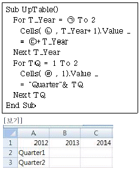
- (ㄱ) 0 (ㄴ) 2 (ㄷ) 2012 (ㄹ) TQ
- (ㄱ) 1 (ㄴ) 1 (ㄷ) 2011 (ㄹ) TQ+1
- (ㄱ) 0 (ㄴ) 1 (ㄷ) 2012 (ㄹ) TQ+1
- (ㄱ) 0 (ㄴ) 1 (ㄷ) 2012 (ㄹ) TQ
(정답률: 62%)
23. 다음 중 엑셀의 각종 데이터 입력에 관한 설명으로 옳지 않은 것은?
- 오늘 날짜를 간단히 입력하기 위해서는 TODAY함수나 ＜Ctrl＞+＜;＞을 누르면 된다.
- 시간 데이터는 콜론(:)으로 시, 분, 초를 구분하여 입력한다.
- 범위를 지정하고 데이터를 입력한 후 ＜Ctrl＞+＜Alt＞+＜Enter＞를 누르면 동일한 데이터가 한 번에 입력된다.
- 날짜 데이터 입력 시 연도를 생략하고 월, 일만 입력하면 자동으로 올해의 연도가 추가되어 입력된다.
(정답률: 58%)
24. 다음 중 엑셀을 종료하는 방법으로 옳지 않은 것은?
- ＜Ctrl＞+＜F4＞ 키를 누른다.
- 제목 표시줄의 왼쪽에 있는 Office 단추()를 클릭한 후 [Excel 끝내기] 단추를 클릭한다.
- 제목 표시줄의 왼쪽에 있는 Office 단추(
 )를 더블 클릭한다.
)를 더블 클릭한다. - 제목 표시줄의 오른쪽에 있는 닫기 단추()를 클릭한다.
(정답률: 50%)
25. 다음과 같은 조건을 만족하는 사용자 지정 셀 서식을 작성한 것으로 옳은 것은?
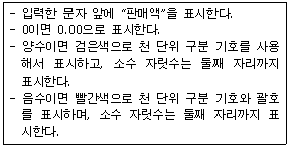
- [검정]#,##0.00;[빨강](#,##0.00);0.00;"판매액"@
- "판매액"@;0.00;[검정]#,##0.00;[빨강](#,##0.00)
- [빨강](#,##0.00);[검정]#,##0.00;0.00;"판매액"@
- 0.00;"판매액"@;[검정]#,##0.00;[빨강](#,##0.00)
(정답률: 51%)
26. 다음 중 빠른 실행 도구 모음에 대한 설명으로 옳지 않은 것은?
- [빠른 실행 도구 모음 사용자 지정]()을 클릭한 후 추가할 도구를 선택한다.
- 리본 메뉴에서 추가할 도구를 선택한 후 마우스 오른쪽 버튼을 눌러 [빠른 실행 도구 모음에 추가]를 클릭한다.
- [빠른 실행 도구 모음]에서 삭제할 도구를 선택한 후 마우스 오른쪽 버튼을 눌러 [빠른 실행 도구 모음에서 제거]를 클릭한다.
- [보기]탭 [표시/숨기기]그룹에서 [기타] 명령을 선택하여 [빠른 실행 도구 모음]을 편집한다.
(정답률: 50%)
27. 다음 시트의 [A9]셀에 수식 '=OFFSET(A1, 3, 3)'을 입력했을 때의 결과 값으로 옳은 것은?
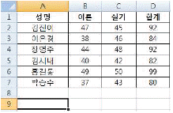
- 38
- 46
- 44
- 92
(정답률: 64%)
28. 다음 시트에서 [A1:G3] 영역을 제목으로 설정하여 매 페이지마다 반복 인쇄하기 위한 페이지 설정 방법으로 옳은 것은?
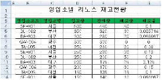
- [페이지 설정] 대화상자의 시트 탭에서 '반복할 행'에 $1:$3를 입력한다.
- [페이지 설정] 대화상자의 시트 탭에서 '인쇄 영역'에 A:G를 입력한다.
- [페이지 설정] 대화상자의 머리글/바닥글 탭에서 '머리글'에 $1:$3를 입력한다.
- [페이지 설정] 대화상자의 머리글/바닥글 탭에서 '머리글'에 A:G를 입력한다.
(정답률: 48%)
29. 차트에 표시할 데이터 계열의 요소 간 값의 차이가 큰 경우 [수정 전] 차트와 같이 그 차이를 차트에 표시하기가 어려운데, [수정 후] 차트처럼 변경하면 값의 차이를 표시할 수 있게 된다. 다음 중 [수정 전] 차트를 [수정 후]와 같이 변경하기 위한 축 옵션으로 옳은 것은?
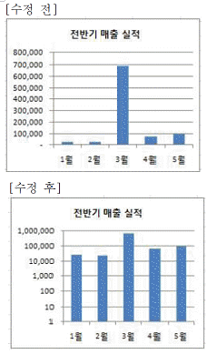
- 최소값과 최대값을 각각 1과 1,000,000로 설정한다.
- 로그 눈금 간격을 10으로 설정한다.
- 주단위를 1,000,000으로 설정한다.
- 표시 단위를 백만으로 설정한다.
(정답률: 68%)
30. 다음 중 매크로 기록과 실행에 관련된 항목들의 설명으로 옳지 않은 것은?
- 자주 사용되는 매크로는 DEFAULT.XLSB로 저장하여 엑셀이 실행될 때 자동으로 열리도록 한다.
- 매크로 기록 기능을 통해 작성된 매크로는 'VBA 편집기'에서 실행할 수 있다.
- 매크로 기록 기능을 이용할 때 기본 저장 위치는 '현재 통합 문서'가 된다.
- 매크로 실행을 위한 바로가기 키는 ＜Ctrl＞+＜영문 소문자＞ 또는 ＜Ctrl＞+＜Shift＞+＜영문 대문자＞로 지정할 수 있다.
(정답률: 48%)
31. 아래 시트에서 고급 필터 기능을 이용하여 수량이 전체평균보다 크면서 거래 일자가 1월인 데이터를 추출하려고 한다. 다음 중 고급필터의 조건식으로 옳은 것은?
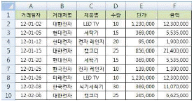
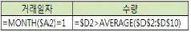
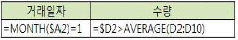
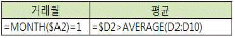
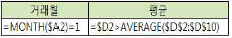
(정답률: 53%)
32. 다음 중 '외부 데이터 가져오기'에 대한 설명으로 옳지 않은 것은?
- [데이터]-[외부 데이터 가져오기]-[Access]를 이용하면 원본 데이터의 변경사항이 워크시트에 반영되도록 설정할 수 있다.
- [데이터]-[외부 데이터 가져오기]-[기존 연결]을 이용하면 Microsoft Query에서 작성한 쿼리 파일(*.dqy)의 실행 결과를 워크시트로 가져올 수 있다.
- [데이터]-[외부 데이터 가져오기]-[웹]을 이용하면 웹 페이지의 모든 데이터들을 그대로 가져올 수 있다.
- [데이터]-[외부 데이터 가져오기]-[기타 원본]-[Microsoft Query]를 이용하면 검색 조건을 부여하여 워크시트에 가져올 데이터를 선별할 수 있다.
(정답률: 66%)
33. 다음 중 부분합에 관한 설명으로 옳지 않은 것은?
- 여러 함수를 이용하여 부분합을 작성하려면 두 번째부터 실행하는 [부분합] 대화상자에서 '새로운 값으로 대치'가 반드시 선택되어 있어야 한다.
- 부분합을 작성한 후 윤곽 기호를 눌러 특정한 데이터가 표시된 상태에서 차트를 작성하면 화면에 표시된 데이터만 차트에 표시된다.
- 부분합을 실행하기 전에 그룹시키고자 하는 필드를 기준으로 정렬되어 있어야 올바른 결과를 얻을 수 있다.
- 그룹별로 페이지를 달리하여 인쇄하기 위해서는 [부분합] 대화상자에서 '그룹 사이에서 페이지 나누기'를 선택한다.
(정답률: 48%)
34. 다음 중 목표 값 찾기에 관한 설명으로 옳지 않은 것은?
- 목표 값 찾기는 수식이 사용된 셀에서 수식으로 구하려는 결과 값은 알고 있으나 그 결과 값을 얻기 위해 필요한 수식 입력 값을 모르는 경우에 사용하는 기능이다.
- 여러 개의 변수를 조정하여 특정한 목표 값을 찾을 때는 '해 찾기'를 이용한다.
- 변경할 입력값에 제한 조건을 지정하여 가장 효과 적인 입력값을 구할 수 있다.
- 목표값 찾기에서 결과 값으로 사용되는 셀은 반드시 다른 셀을 참조하는 수식으로 구성되어 있어야 한다.
(정답률: 28%)
35. 다음 중 배열 수식의 입력 및 변경 규칙에 대한 설명으로 옳지 않은 것은?
- 배열 수식을 입력하거나 편집할 때에는 [Ctrl] + [Shift] + [Enter]키를 눌러야 수식이 올바르게 실행된다.
- 수식에 사용되는 배열 인수들은 각각 동일한 개수의 행과 열을 가져야 한다.
- 배열 수식의 일부만을 이동하거나 삭제할 수는 있으나 전체 배열 수식을 이동하거나 삭제할 수는 없다.
- 배열 상수는 중괄호를 직접 입력하여 상수를 묶어야 한다.
(정답률: 59%)
36. 다음 매크로에 대한 설명으로 옳지 않은 것은?
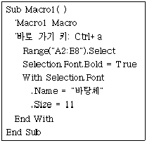
- 매크로 기록 시 활성화 되었던 시트에서만 매크로의 실행이 가능하다.
- 매크로 이름은 'Macro1'이다.
- 매크로 기록 시 [Ctrl]+[a]키를 누르면 'Macro1' 매크로가 실행되도록 바로 가기 키를 지정하였다.
- 매크로를 실행하면 [A2:E8]영역의 서식이 글꼴 스타일 '굵게', 글꼴 '바탕체', 글꼴 크기 '11'로 변경된다.
(정답률: 65%)
37. 다음 프로시저가 실행된 후 LoopN의 값으로 옳은 것은?
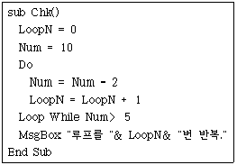
- 3
- 4
- 5
- 6
(정답률: 39%)
38. 다음 중 [홈]탭 [편집]그룹의 [찾기 및 선택] 명령을 이용하여 찾을 수 없는 것으로 옳은 것은?
- 수식
- 메모
- 조건부 서식
- 표 서식
(정답률: 36%)
39. 다음 중 함수식과 그 실행 결과가 옳지 않은 것은? (단, 함수식의 결과가 날짜로 표시되어 있는 경우 셀의 표시 형식은 '날짜'로 설정되어 있는 것으로 한다)
- =EDATE("2012-1-1", -5) : 2011-08-01
- =EOMONTH("2012-1-1", 5) : 2012-06-01
- =NETWORKDAYS("2012-1-1", "2012-1-10") : 7
- =WORKDAY("2012-1-1", 5) : 2012-01-06
(정답률: 54%)
40. 현재 작업하고 있는 통합 문서의 시트 'Sheet1', 'Sheet2', 'Sheet3'의 [A2] 셀의 합을 구하고자 한다. 다음 중 참조 방법이 옳지 않은 것은?
- =SUM(Sheet1:Sheet3!A2)
- =SUM(Sheet1!A2:Sheet3!A2)
- =SUM(Sheet1!A2, Sheet2!A2, Sheet3!A2)
- =SUM('Sheet1'!A2, 'Sheet2'!A2, 'Sheet3'!A2)
(정답률: 35%)
3과목: 데이터베이스 일반
41. 다음 중 테이블에서 각 데이터 형식의 필드 속성에 대한 설명으로 옳지 않은 것은?
- 텍스트의 필드 크기는 최대 255자까지 지정할 수 있다.
- 날짜/시간은 미리 정의된 형식을 선택하거나 사용자 지정 형식을 입력할 수 있다.
- 숫자는 필드 크기 속성에서 바이트, 정수, 실수, 통화 중 선택할 수 있다.
- 입력 마스크는 데이터 저장 시 입력 마스크 기호와 함께 저장할 것인지의 여부를 설정할 수 있다.
(정답률: 43%)
42. 다음 중 그룹화된 보고서의 그룹 머리글과 그룹 바닥글에 대한 설명으로 옳지 않은 것은?
- 그룹 머리글은 각 그룹의 첫 번째 레코드 위에 표시된다.
- 그룹 바닥글은 각 그룹의 마지막 레코드 아래에 표시된다.
- 그룹 머리글에 계산 컨트롤을 추가하여 전체 보고서에 대한 요약 값을 계산할 수 있다.
- 그룹 바닥글은 그룹 요약과 같은 항목을 나타내는데 효과적이다.
(정답률: 70%)
43. 폼에서 데이터 원본으로 사용하는 테이블의 필드 값을 보여주고, 값을 수정할 수도 있는 컨트롤로 가장 적절한 것은?
- 바운드 컨트롤
- 언바운드 컨트롤
- 계산 컨트롤
- 탭 컨트롤
(정답률: 62%)
44. 다음 중 보고서 작성 시 설정하는 각종 속성에 대한 설명으로 옳지 않은 것은?
- 그룹 머리글의 '반복 실행 구역' 속성은 해당 머리글을 매 페이지마다 표시할 것인지의 여부를 '예/아니오'로 설정한다.
- 레이블 컨트롤의 '중복 내용 숨기기' 속성은 동일한 내용이 입력된 레이블들의 표시 여부를 '예/아니오'로 설정한다.
- 텍스트 상자 컨트롤의 '컨트롤 원본' 속성 값으로 함수나 수식을 사용할 경우에는 등호(=)를 먼저 입력해야 한다.
- 본문의 '다른 배경색' 속성은 표시되는 레코드에 대해 '배경색' 속성과 교대로 표시될 배경색을 지정한다.
(정답률: 23%)
45. 다음 중 관계 편집 창의 옵션에 대한 설명으로 옳지 않은 것은?
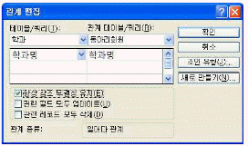
- '항상 참조 무결성 유지'를 체크하였으므로 관련된 두 테이블 간에 참조 관계에 문제가 발생하지 않도록 해준다.
- '항상 참조 무결성 유지'를 체크하고 '관련 필드 모두 업데이트'를 체크하는 경우, 관계 테이블의 필드([동아리회원]의 '학과명')를 수정하면 기본 테이블의 해당 필드([학과]의 '학과명')도 자동적으로 수정된다.
- '항상 참조 무결성 유지'를 체크하고 '관련 레코드 모두 삭제'를 체크하지 않는 경우, 관계 테이블([동아리회원])에서 참조하고 있는 '학과명'을 갖는 기본 테이블([학과])의 해당 레코드는 삭제할 수 없다.
- 관계 테이블([동아리회원])의 레코드를 삭제하는 경우, 옵션을 어떻게 설정하든 관계 없이 참조무결성의 유지에는 아무런 문제가 발생하지 않는다.
(정답률: 35%)
46. 다음 중 폼이 다음과 같은 형태로 표시되는 경우 설정된 폼의 '기본 보기' 속성의 값으로 옳은 것은?
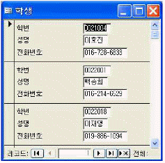
- 단일 폼
- 연속 폼
- 데이터 시트
- 피벗 테이블
(정답률: 60%)
47. 다음 중 1, 2, ..., 78 까지 입력되어 있는 회원번호 필드(데이터 형식:텍스트)의 값을 001, 002, ... 078과 같이 3자리의 문자 형태로 변경하려고 할 때 SQL문으로 옳은 것은?
- update 회원 set 회원번호 = right("00"& 회원번호,3)
- update 회원 set 회원번호 = left("00"& 회원번호,3)
- update 회원 set 회원번호 = right(회원번호& "00",3)
- update 회원 set 회원번호 = left(회원번호& "00",3)
(정답률: 33%)
48. 다음 중 하위 보고서에 대한 설명으로 옳지 않은 것은?
- 하위 보고서는 일대다의 관계가 설정되어 있는 테이블의 데이터를 출력할 때 유용하다.
- 주 보고서와 연결된 하위 보고서는 주 보고서의 현재 레코드와 관련된 레코드만 표시된다.
- 하위 보고서의 '기본 보기' 속성 값은 '보고서 보기'와 '레이아웃 보기' 중 선택할 수 있다.
- 하위 보고서에서도 그룹화 및 정렬 기능을 설정할 수 있다.
(정답률: 42%)
49. 다음 중 관계형 데이터베이스에 대한 설명으로 옳지 않은 것은?
- 테이블에서 행은 각 속성들의 값을 나타내게 되고, 열은 하나의 레코드에 대한 여러 속성들의 묶음이 된다.
- 관계형 데이터베이스에서 각각의 열은 대상의 속성을 나타낸다.
- 테이블의 열들을 나타내는 속성들 중 각 행을 유일하게 구별할 수 있게 하는 속성을 기본 키로 지정한다.
- 관계형 데이터베이스는 모든 데이터들을 테이블과 같은 형태로 나타내어 저장한 것이다.
(정답률: 28%)
50. 다음 중 테이블의 필드 속성에서 인덱스를 지정할 수 없는 데이터 형식은?
- 텍스트
- OLE 개체
- 예/아니오
- 숫자
(정답률: 66%)
51. 다음 중 액세스의 보고서 작성에 대한 설명으로 옳지 않은 것은?
- 보고서를 작성해 놓으면 데이터가 변경된 경우 새로운 보고서를 작성할 필요없이 해당 데이터에 대한 보고서를 다시 출력하면 된다.
- 엑셀 데이터와 같은 외부 데이터를 연결한 테이블을 이용하여 보고서를 작성할 수도 있다.
- 표나 레이블이 미리 인쇄되어 있는 양식 종이를 이용하여 보고서를 인쇄하는 경우 [페이지 설정] 대화상자에서 '데이터만 인쇄'를 선택한다.
- 텍스트 상자나 콤보 상자와 같은 컨트롤을 이용하는 경우 보고서에서 테이블의 데이터를 수정할 수 있다.
(정답률: 38%)
52. 다음 중 폼에 관한 설명으로 옳지 않은 것은?
- 폼은 데이터의 입력, 편집 작업 등을 위한 사용자와의 인터페이스로 테이블, 쿼리, SQL문 등을 원본으로 하여 작성한다.
- '캡션' 속성을 이용하여 폼의 이름을 변경할 수 있다.
- '그림' 속성을 이용하여 그림을 폼의 배경으로 넣을 수 있다.
- '기본 보기' 속성을 이용하여 화면에 표시되는 폼의 형태를 변경할 수 있다.
(정답률: 42%)
53. 다음 중 데이터베이스 내의 정보를 검색, 추가, 삭제, 수정할 수 있는 데이터베이스 언어를 의미하는 것은?
- DCL
- DBA
- DDL
- DML
(정답률: 45%)
54. 다음 중 키의 개념에 대한 설명으로 옳지 않은 것은?
- 후보키(Candidate Key)는 유일성과 최소성을 만족한다.
- 슈퍼키(Super Key)는 유일성은 가지지만 최소성을 가지지 않는 키이다.
- 기본키(Primary Key)로 지정된 속성은 모든 튜플에 대해 널(null)값을 가질 수 없다.
- 외래키(Foreign Key)는 후보키 중에서 기본키로 정의되지 않은 나머지 후보키들을 말한다.
(정답률: 49%)
55. 다음 중 회원 테이블에서 정회원과 준회원의 이름과 가입일, 등급 정보를 조회하는 SQL문으로 옳은 것은? (단, 회원 테이블에는 회원번호, 성명, 가입일, 연락처, 등 급 등의 필드가 있으며, '등급' 필드에는 '정회원', '준회원', '예비회원'과 같은 문자열 데이터가 저장되어 있다)
- select 이름, 가입일, 등급 from 회원 where 등급 in ('정회원','준회원')
- select 이름, 가입일, 등급 from 회원 where 등급 = ('정회원','준회원')
- select * from 회원 where 등급 like ('정회원',' 준회원')
- select * from 회원 where 등급 between ('정회원','준회원')
(정답률: 47%)
56. 다음 중 매크로 함수 OutputTo에서 개체 유형이 테이블인 경우 출력 가능한 형식으로 옳지 않은 것은?
- MS-DOS 텍스트(*.txt)
- 서식 있는 텍스트(*.rtf)
- HTML (*.htm; *.html)
- Snapshot 형식(*.snp)
(정답률: 46%)
57. 다음 중 Access 2007에서 매개 변수 쿼리에 대한 설명으로 옳지 않은 것은?
- 매개 변수를 이용하면 쿼리를 열 때마다 사용자가 입력한 조건에 해당하는 것만 검색할 수 있다.
- 디자인 보기의 '조건' 행에서 매개 변수 대화상자에 표시할 텍스트를 대괄호로 묶어 입력한다.
- 쿼리를 실행하면 매개 변수 대화상자가 나타난다.
- 쿼리 실행 시 매개 변수 대화상자에 매개변수 값으로 조건식을 입력할 수 있다.
(정답률: 26%)
58. 다음 중 액세스에서 보고서를 출력(미리보기/인쇄)하기 위한 VBA 개체와 메소드로 옳은 것은?
- Docmd.OpenReport
- Report
- Docmd.ReportPrint
- Report.Open
(정답률: 42%)
59. 아래 그림의 반 필드와 같이 데이터 입력 시 목록 상자에서 원하는 값을 선택하려고 할 때 설정해야 하는 필드 속성은?
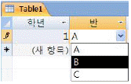
- 입력 마스크
- 캡션
- 유효성 검사 규칙
- 조회
(정답률: 36%)
60. 다음 중 Access 2007에서 사용되는 함수에 대한 설명으로 옳지 않은 것은?
- Minute : 분을 나타내는 0에서 59 사이의 정수를 반환한다.
- TimeSerial : 특정 시만을 나타내는 시간이 포함된 Variant(Date) 형식을 반환한다.
- TimeValue : 시간을 포함하는 Variant(Date) 형식 을 반환한다
- StrReverse : 지정한 문자열을 역순으로 정렬한 문자열을 반환한다.
(정답률: 46%)
한글 Windows XP는 32비트 운영체제이므로 모든 데이터를 64비트 단위로 처리하지 않는다. 따라서 이 설명은 옳지 않다.